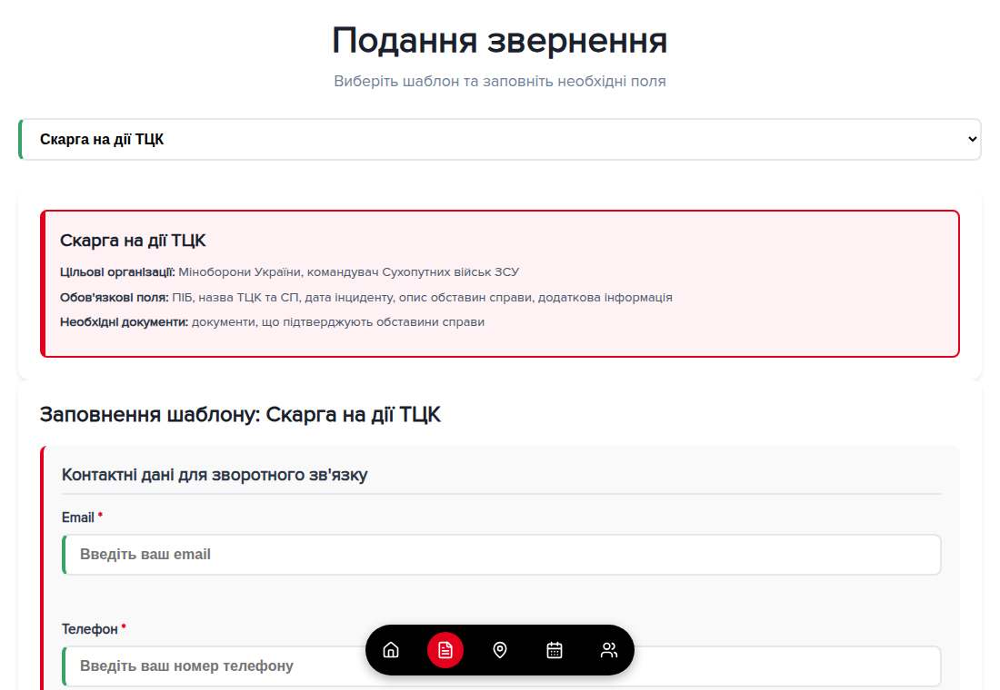
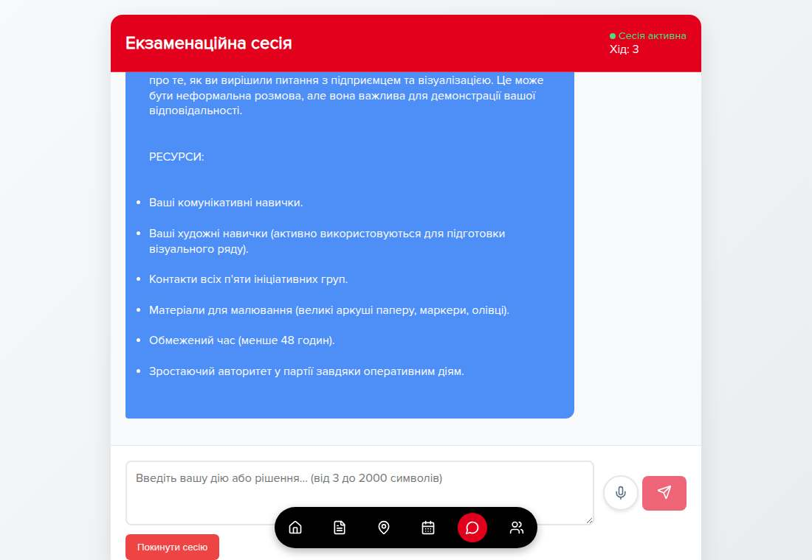
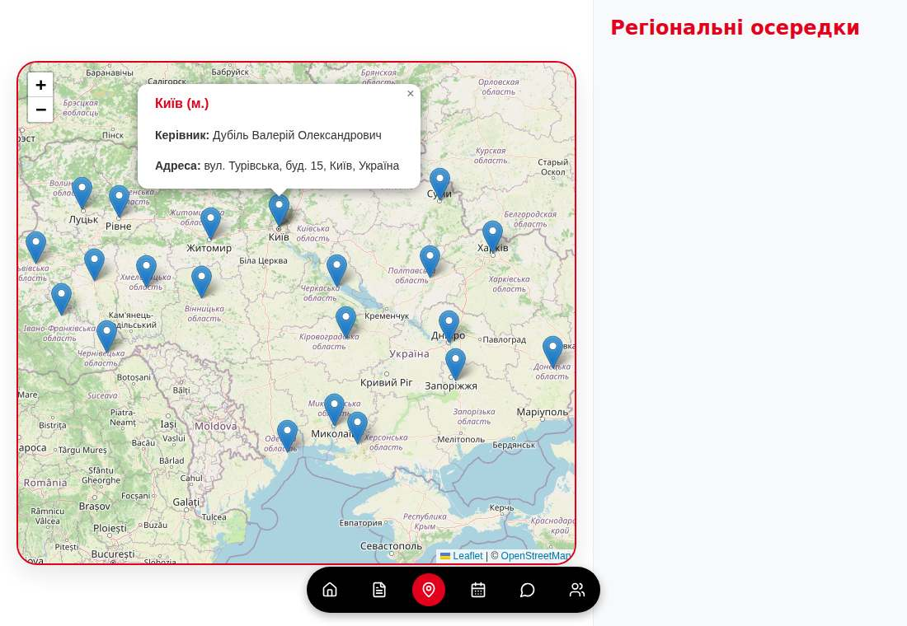
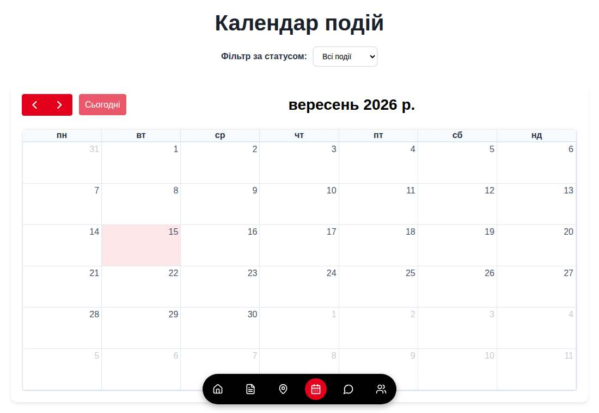
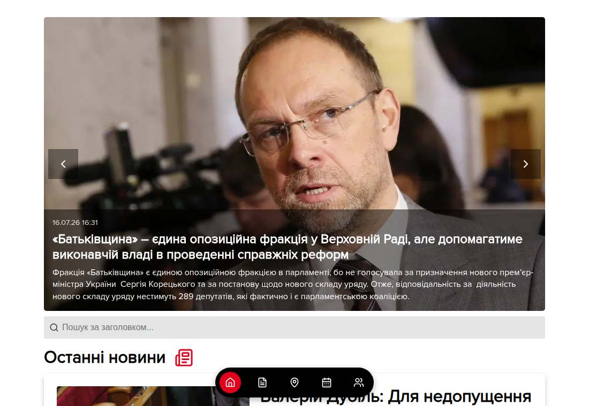

Product brief · licensing & white-label
A working platform for organisations that take in requests from people and have to decide who to let in. Template-driven applications on one side, an AI messaging layer on the other — both already running in production.
Why this exists
Email, phone, walk-ins. Someone reads each one to work out what it actually is, which department owns it, and what is missing before anything can move.
The wording is near-identical every time. The part that genuinely varies is five or six fields — and those get keyed by hand, with the errors that follow.
No status anywhere means every update is a phone call, and every phone call is a person who is not processing the queue.
Two interviewers, two sets of notes, no common ground. Nothing in the file lets a third person re-check the decision six months later.
How it works
Module one · the application engine

Module one, continued
The reference deployment ships 25 templates for a national membership organisation. None of that vocabulary is in the code — a template is data.
Module two · the messaging system
A thread that takes a typed message, a voice note or a document in the same turn. The file travels with the message rather than through a separate upload.
A turn-based session with a game-master agent. Persistent and resumable; one active session per person, so a half-finished interview cannot be restarted to get an easier run.
A call button on the page, opening with the context of the screen it was launched from — on the application screen it receives the drafted text and talks the applicant through it.

Module two, continued · the part competitors do not have
The agent reads the candidate's own profile, builds a scenario around it, and then applies pressure. Everyone is tested on judgement under the same structure, and the transcript — not one interviewer's memory — is what goes in the file.
Four things are being read at once: the ethical call, the handling of a donor, communication under a deadline, and resourcefulness when the equipment fails.
Also included
Profile assembled from the interview, application status on the card, editable details, avatar storage.
Twelve configurable levels with a progress bar and the next step named. Rename them to your own grades.
A personal invite link per member, with a downloadable QR code for printed material and a counter of who came in.
Offices on a map with head, phone and address. The reference deployment carries 25 regional entries.
Month view with status filtering — upcoming, active, finished — plus region, venue and event type per entry.
Visitor and member roles with separate surfaces, JWT access and refresh tokens in HttpOnly cookies, email verification, explicit data-processing consent captured per submission.
Pulls from your existing public site — slider, latest items, search by headline — so the cabinet is worth opening between applications.
Typed addresses resolve against an open geocoder, country-scoped, so region data stays clean enough to route on.
The running deployment is Ukrainian end to end; the interface strings and the whole template library are content, not code.



Getting it live
Your identity, your domain, your sender address.
Your forms authored as templates: recipients, fields, documents, body text.
The competencies you screen for, written into the interview and assistant agents.
Branches, regions and the first calendar of events loaded.
One department or region runs live intake end to end.
Remaining units onboarded, admin handover, support in place.
Commercial structure: licence, one-off setup, and support — terms depend on scale and on how much of the template library you want authored for you.
Send us one form you process by hand today. We will author it as a template, run a real submission through the engine, and show you the generated document and the applicant's view of it.